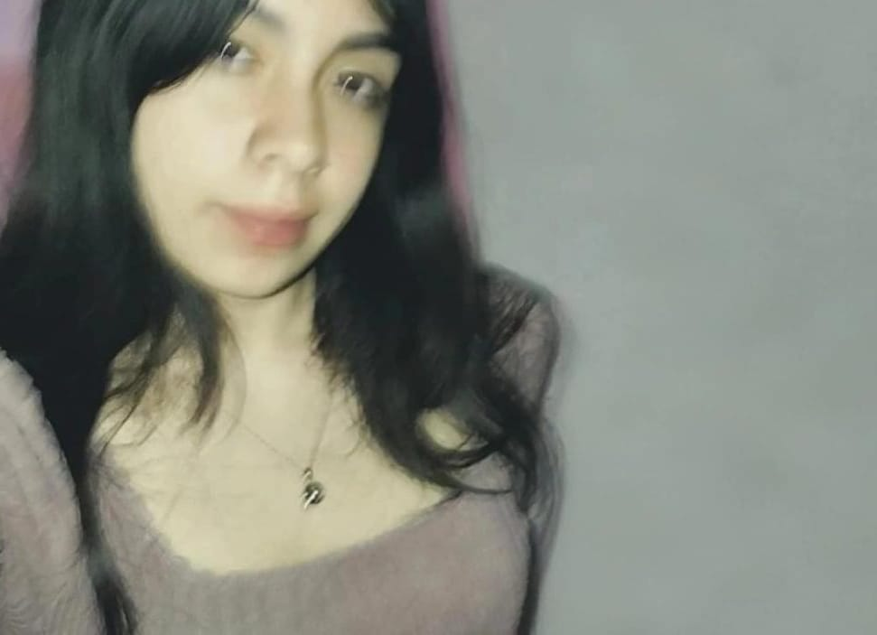
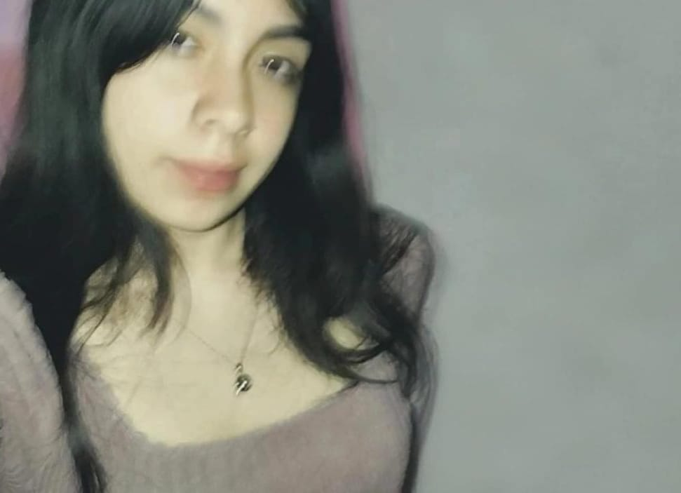

Mi nombre es Fátima Sandoval Fuentes, tengo 15 años, nací el 22 de septiembre de 2009, vivo con mis papás y mi hermana.
Normalmente soy una persona muy callada y penosa, aunque cuando estoy en confianza me suelto más, casi siempre busco la aprobación de los demás cambiando mi personalidad o las cosas que no les gusten de mi, tengo un fuerte problema con las comparaciones y el miedo a que me dejen con explicación, cuando convivo muchos o me comparo con alguien suelo adoptar cosas como formas de ser o gustos de los demás. Soy también muy observadora, busco en las personas cosas no tan relevantes para intentar saber cómo son, me aburro muy fácil de todo, también me gusta mucho preguntar por la vida de los demás para entender porqué son así.
Mis colores favoritos son el gris azulado, el lila y el vino, me encanta todo lo que esté relacionado con estrellas (literal en todos lados dibujo o tengo estrellas), mis cantantes favoritos son Rauw Alejandro y CRO, me gusta mucho comer helado o chocolate, también tomar fuze tea de durazno.
No me gusta estar mucho tiempo sola, o sentirme ignorada, cada que estoy platicando de algo y me interrumpen, me quedo callada. Me gusta muchísimo dormir, normalmente priorizo dormir antes que la escuela, antes no pasaba eso pero desde pandemia empecé a ser así. También me gusta pasar tiempo arreglándome las uñas, intento hacer distintos diseños aunque siempre parezcan los mismos por tener color vino o estrellas. También me gusta maquillarme.
Desde pequeña estuve en diferentes cursos extracurriculares, como inglés, ballet, natación y diferentes tipos de baile, cuando tenía 2 años y medio comencé con clases de ballet, aunque lo dejé lo estoy volviendo a retomar, cuando ingrese al kinder sabía el abecedario completo en español e inglés, sabía contar del 0 al 100 y me gustaba mucho colorear, también me gustaba jugar a la cocinita, en el kinder fui la abanderada de la escolta. Me gusta mucho bailar, cuando tuve varios problemas no me gustaba hacer nada más que dormir, pero tenía que ir a clases de baile, ahí me sentía segura, lo disfrutaba, y me ayudaba a canalizar de cierto modo lo que sentía.
Al igual que mi hermana tengo una certificación de un curso que tome en Kimberly Clark y en la actualidad tomo en curso de celex en el Cecyt19,soy responsable aunque dejo casi todo a la última horay nunca estudio para los exámenes.
Mi carrera soñada es ser sobrecargo, todo empezó cuando era más pequeña y las veía, me gustaba mucho cómo se veían con los diferentes uniformes y desde ahí quise poder dedicarme a ello cuando sea más grande.
Uno de mis sueños más grandes es poder tener un buen trabajo, una familia bonita, con 3 hijos, alguien que me quiera y esté conmigo siempre, y también una casa grande y bonita. Me gustaría que mis hijos se sientan queridos siempre, que me tengan confianza y nos podamos llevar bien.
 
